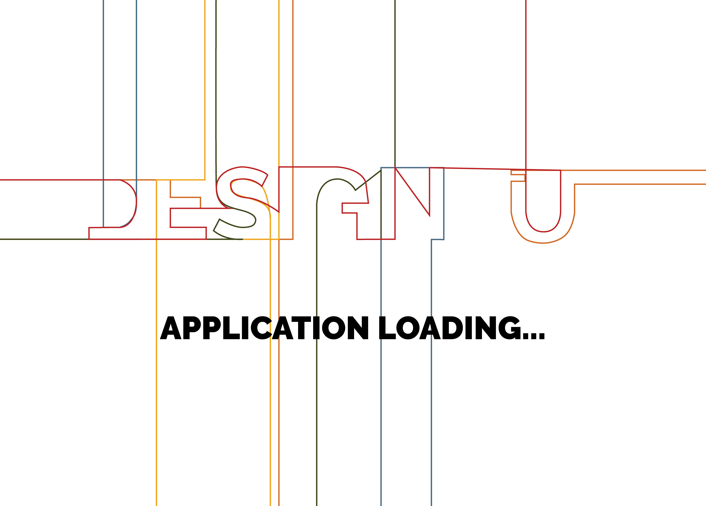
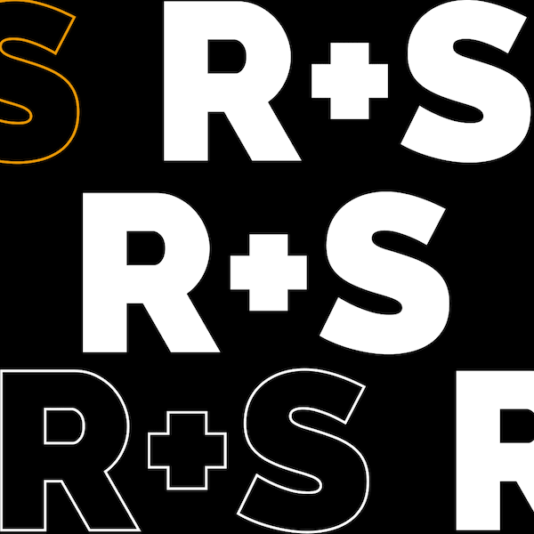
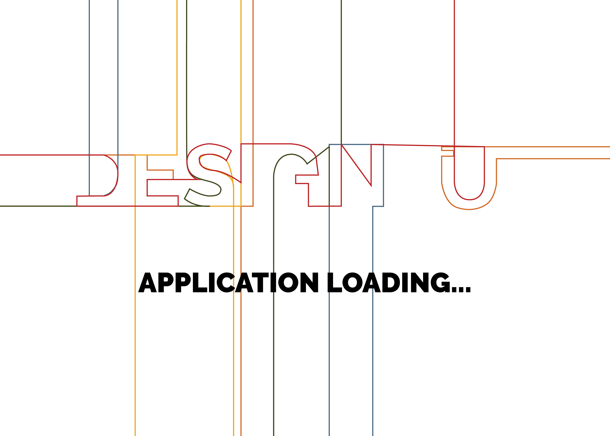
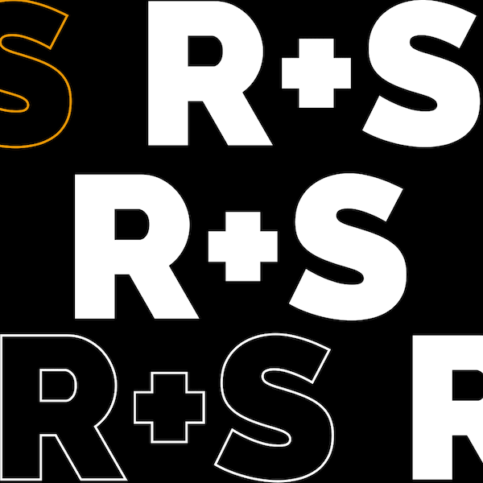
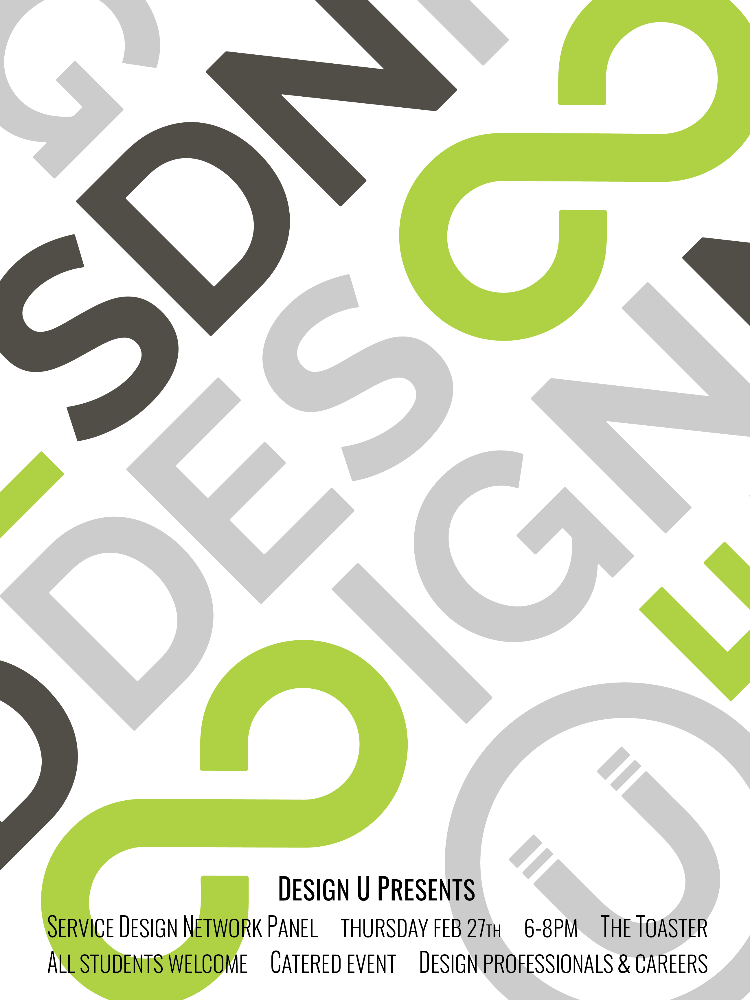
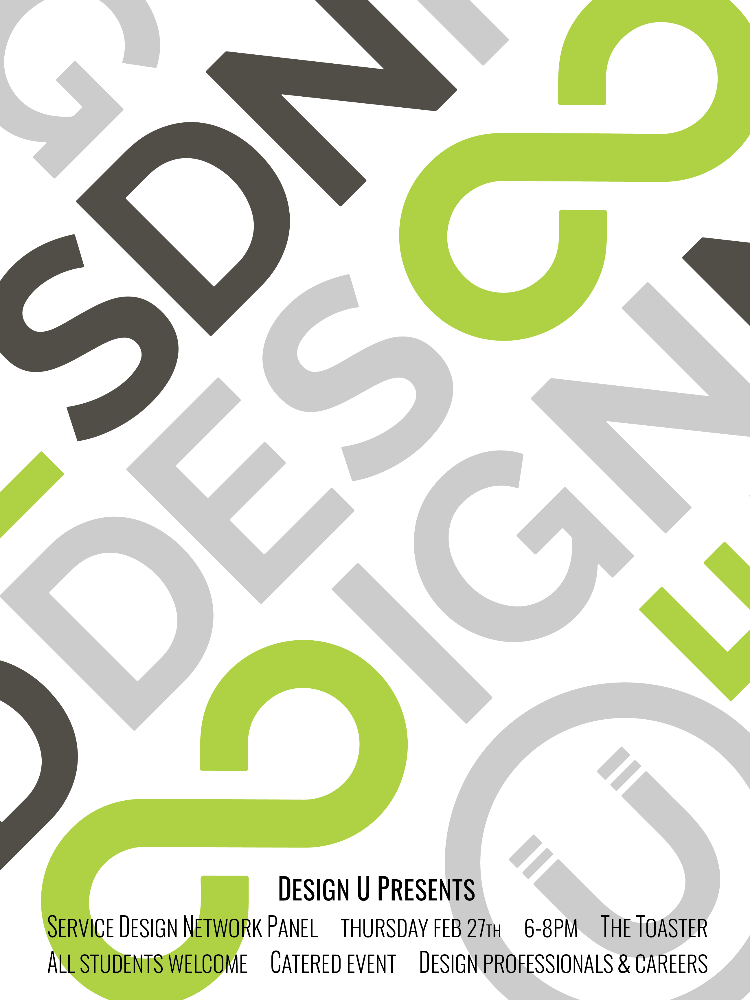

Design U
Design U is a pro-bono, student consultancy at the University of Minnesota-Twin Cities. As Creative Director, it has been my job to run different campaigns, promotions, and communications. My role has centered around social media strategies and how the organization can showcase its professional, quirky, creative work.
How might we create a social media presence?
The first step in revitalizing our social media started with a recruitment campaign. This campaign was the first of the semester, so it was used to establish the transition of the social media page, as well as monitor what content was more engaging.
 



How might we run a campaign?
With applications over, the next big event was a Service Design Network Panel. I created material to promote the event and get people excited. This included: posters, 4 social media posts, and emails to professors and faculty to spread word of mouth.
 
